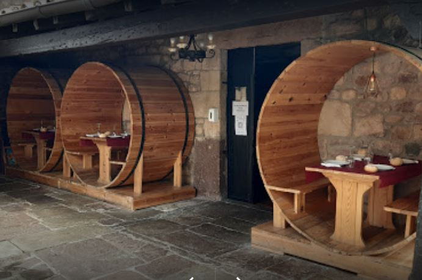
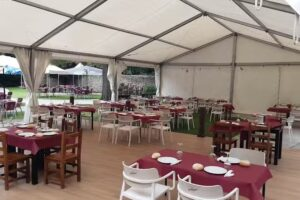

Página oficial
Sidrería Cachopo Las Barricas
Restaurante amplio en Cartes, Cantabria, especializado en cachopo, cocina regional y comida casera. Un espacio pensado para disfrutar de platos con sabor de la tierra, grandes comedores y una terraza amplia para compartir en familia, con amigos o en celebraciones.
Dirección
C. Cam. Real, 34, 39311 Cartes, Cantabria
Horario
Jueves 12:00–17:00 · Viernes a lunes 12:00–23:30 · Martes y miércoles cerrado
Teléfono
942 80 82 07
Especialidad
Cachopo, cocina regional y comida casera
Platos destacados
Especialidades de la casa
Una selección de platos representativos para mostrar claramente la propuesta gastronómica del restaurante.
Estilo de cocina
Espacio
Galería
Ambiente del restaurante
Conoce algunos espacios de Sidrería Cachopo Las Barricas: decoración, comedor interior y terraza.



Contacto
Información del restaurante
Esta parte deja claro quién es el negocio, dónde está y cómo contactar, algo importante tanto para los clientes como para la presencia online.
Datos básicos
Nombre: Sidrería Cachopo Las Barricas
Dirección: C. Cam. Real, 34, 39311 Cartes, Cantabria
Teléfono: 942 80 82 07
WhatsApp: 636 40 11 66
Horario: Jueves 12:00–17:00 · Viernes a lunes 12:00–23:30 · Martes y miércoles cerrado
Redes y contacto
Canales disponibles:
También podemos añadir más adelante un botón de reservas o un enlace directo a Google Maps.